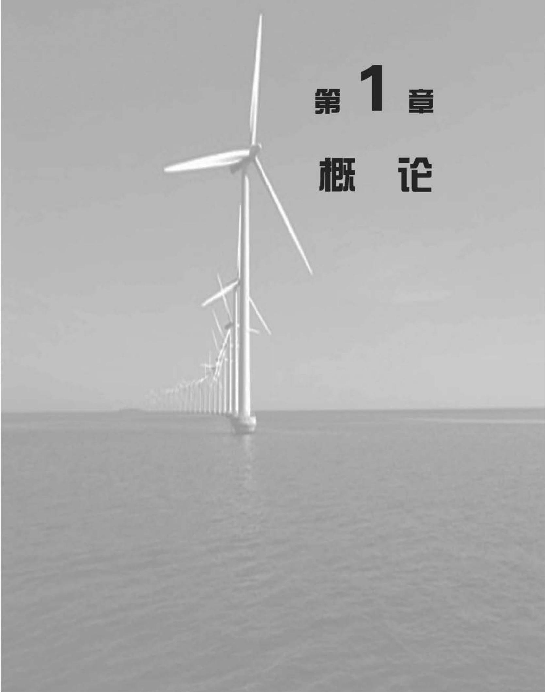

目 录¶
第 1 章 概 论 1
1.1 发展历程 2
1.2 现代风力机 4
1.3 本书的概要 6
参考文献 7
第 2 章 风资源 9
2.1 风特性 10
2.2 风资源的地理变化 11
2.3 长期风速变化 12
2.4 年度和季度性变化 12
2.5 天气差异和昼夜差异 14
2.6 湍 流 15
2.6.1 湍流的特性 15
2.6.2 边界层 16
2.6.3 湍流强度 18
2.6.4 湍流谱 20
2.6.5 长度尺度及其他参数 22
2.6.6 渐近限制 23
2.6.7 交叉谱和相干方程 24
2.6.8 湍流的曼恩模型 26
2.7 阵风速度 27
2.8 极端风速 28
2.9 风速预测与预报 30
2.9.1 统计方法 30
2.9.2 气象分析方法 31
2.10 风电场和尾流中的湍流 32
2.11 复杂地形的湍流 34
参考文献 34
第 3 章 水平轴风力机的空气动力学 37
3.1 引 言 38
3.2 致动盘概念 39
3.2.1 动量定理 40
3.2.2 风能利用系数 40
3.2.3 贝兹极限 41
3.2.4 推力系数 41
3.3 风轮圆盘理论 42
3.3.1 旋转尾流 42
3.3.2 角动量定理 43
3.3.3 最大功率 45
3.4 致动盘的涡流柱模型 46
3.4.1 引言 46
3.4.2 涡流柱理论 46
3.4.3 附着涡环量和诱导速度的关系 47
3.4.4 根 涡 48
3.4.5 转矩和功率 48
3.4.6 轴向流场 49
3.4.7 切向流场 49
3.4.8 轴向推力 50
3.4.9 径向流场 51
3.4.10 结 论 52
3.5 风轮叶片理论 52
3.5.1 引 言 52
3.5.2 叶素理论 53
3.5.3 叶素/动量(BEM)定理 54
3.5.4 风轮转矩和功率的确定 56
3.6 气体分离的动量定理 57
3.6.1 自由流/混合尾流 57
3.6.2 气流分离引起的风轮推力的修正 58
3.6.3 推力系数的经验确定 59
3.7 叶片几何特性 60
3.7.1 引 言 60
3.7.2 变速运行时的优化设计 60
3.7.3 实际叶片设计 63
3.7.4 阻力对最佳叶片设计的影响 65
3.7.5 恒速运行时的最佳叶片设计 67
3.8 叶片数的影响 68
3.8.1 引 言 68
3.8.2 叶尖损失 68
3.8.3 叶尖损失因子的 Prandtl 渐近法 73
3.8.4 叶根损失 76
3.8.5 叶尖损失对最佳叶片设计和功率的影响 76
3.8.6 计及叶尖损失的非最优运行 80
3.8.7 叶尖损失的不同解释 81
3.9 失速延迟 82
3.10 实际风力机的计算结果 85
3.11 性能曲线 88
3.11.1 引 言 88
- \({11.2}\;{C}_{\mathrm{P}} - \lambda\) 特性曲线 89
3.11.3 叶片实度对功率特性的影响 89
- 11.4 \({C}_{\mathrm{Q}} - \lambda\) 力矩曲线 91
3.11.5 \({C}_{\mathrm{T}} - \lambda\) 推力曲线 92
3.12 恒速的运行情况 92
3.12.1 引 言 92
- 12.2 \({K}_{\mathrm{P}} - 1/\lambda\) 特性曲线 93
3.12.3 失速调节 93
3.12.4 转速变化的影响 94
3.12.5 叶片桨距角变化的影响 95
3.13 变桨调节 96
3.13.1 引 言 96
3.13.2 变桨到失速 96
3.13.3 变桨到顺桨 96
3.14 测量的特性曲线与理论的特性曲线的比较 97
3.15 变速运行 99
3.16 捕获能量的估计 100
3.17 风力机空气动力学设计 104
3.17.1 引 言 104
3.17.2 NREL 翼型 105
3.17.3 Risø 翼型 106
3.17.4 Delft 翼型 108
参考文献 109
附录 A 翼型的升力和阻力 111
A. 1 阻力定义 111
A. 2 阻力系数 113
A. 3 边界层 114
A. 4 边界层的分离 114
A. 5 层流和湍流边界层 115
A. 6 升力定义及其与环流的关系 117
A. 7 失速型翼型 119
A. 8 升力系数 120
A. 9 翼型阻力特性 121
A. 10 有弯度的翼型 123
第 4 章 深层次的风力机空气动力学主题 127
4.1 引 言 128
4.2 稳定偏航的风力机的空气动力 128
4.2.1 风力机在固定偏航时的动量定理 129
4.2.2 风轮偏航的 Glauert 动量定理 130
4.2.3 偏航致动盘的涡流柱面模型 133
4.2.4 气流膨胀 137
4.2.5 相关理论 141
4.2.6 风力机风轮在固定偏航时的旋转尾流 142
4.2.7 风力机在固定偏航时的叶素理论 143
4.2.8 风力机在固定偏航时的叶素动量理论 144
4.2.9 诱导速度的计算值 147
4.2.10 风轮固定偏航时的叶片力 148
4.2.11 固定偏航时的偏航力矩和倾斜力矩 149
4.3 加速势方法 151
4.3.1 引 言 151
4.3.2 Kinner 的通用压力分布理论 153
4.3.3 压力的轴对称分布 155
4.3.4 压力的反对称分布 158
4.3.5 Pitt 和 Peters 模型 160
4.3.6 通用加速势方法 161
4.3.7 各种方法的比较 161
4.4 非定常定流——动态入流 162
4.4.1 引 言 162
4.4.2 非定常流中加速势方法的调整 163
4.4.3 非定常的偏航力矩和倾斜力矩 165
4.5 准定常翼型的空气动力学 168
4.5.1 引 言 168
4.5.2 翼型加速度引起的气动力 168
4.5.3 非定常流中尾流对翼型空气动力的影响 169
4.6 动态失速 173
4.7 流体力学的计算 174
参考文献 175
第 5 章 水平轴风力机设计载荷 177
5.1 国家和国际标准 178
5.1.1 发展背景 178
5.1.2 IEC 61400-1 178
5.1.3 Germanischer Lloyd 认证标准 179
5.2 载荷设计基础 179
5.2.1 载荷源 179
5.2.2 极限载荷 179
5.2.3 疲劳载荷 180
5.2.4 局部安全系数 180
5.2.5 控制和安全系统的功能 181
5.3 湍流与尾流 181
5.4 极限载荷 183
5.4.1 运行时载荷情况 183
5.4.2 非运行时载荷情况 186
5.4.3 叶片和塔架间距 187
5.4.4 阵风的约束随机模拟 187
5.5 疲劳载荷 189
5.6 叶片的静态载荷 189
5.6.1 升力与阻力系数 189
5.6.2 不同机组类型的关键设置 189
5.6.3 动态响应 190
5.7 运行中的叶片载荷 197
5.7.1 固定和随机载荷 197
5.7.2 固定的气动载荷 197
5.7.3 重力载荷 204
5.7.4 固定惯性载荷 205
5.7.5 随机气动载荷——频域分析 207
5.7.6 随机气动载荷——时域分析 216
5.7.7 极限载荷 218
5.8 叶片动态响应 221
5.8.1 模态分析 221
5.8.2 振形及频率 223
5.8.3 离心刚化作用 223
5.8.4 气动及结构阻尼 225
5.8.5 固定载荷的响应——逐步的动态分析 227
5.8.6 随机载荷响应 230
5.8.7 对模拟载荷的响应分析 233
5.8.8 摇摆运动 233
5.8.9 塔架的耦合 238
5.8.10 气动弹性稳定性 242
5.9 叶片的疲劳应力 243
5.9.1 叶片疲劳设计的方法 243
5.9.2 固定分量和随机分量的组合 244
5.9.3 频域内的疲劳估计 245
5.9.4 风力机仿真 247
5.9.5 疲劳循环计数 247
5.10 轮毂与低速轴载荷 248
5.10.1 引 言 248
5.10.2 固定气动载荷 248
5.10.3 随机气动载荷 249
5.10.4 重力载荷 252
5.11 机舱载荷 252
5.11.1 来自叶轮的载荷 252
5.11.2 包层载荷 253
5.12 塔架载荷 254
5.12.1 极限载荷 254
5.12.2 极限载荷下的动态响应 255
5.12.3 稳定风速下的运行载荷(固定分量) 256
5.12.4 湍流下的运行载荷(随机分量) 257
5.12.5 运行载荷的动态响应 260
5.12.6 疲劳载荷及其应力 261
5.13 风力机动态分析规则 262
5.14 从仿真推测极限载荷 268
5.14.1 全局极值经验累积分布函数的推导 268
5.14.2 经验分布的拟合极值分布 269
5.14.3 极值分布的比较 273
5.14.4 概率分布组合 275
5.14.5 推 断 275
5.14.6 聚合后拟合概率分布 275
5.14.7 局部极值方法 275
5.14.8 收敛要求 276
参考文献 278
附录B 湍流风速下静止叶片的动态响应 280
B.1 引 言 280
B. 2 频域响应函数 280
B. 3 忽略风速沿叶片变化的共振位移响应 281
B. 4 湍流风速横向分布对共振位移响应的影响 283
B. 5 叶根弯矩的共振 286
B. 6 叶根弯矩的背景效应 288
B. 7 峰值效应 289
B. 8 叶片中部的弯矩 291
参考文献 291
第 6 章 水平轴风力机的概念设计 293
6.1 简 介 294
6.2 风轮直径 294
6.2.1 成本模型 294
6.2.2 风力机大小最优化的简化成本模型实例 295
6.2.3 NREL 成本模型 298
6.2.4 整机尺寸增长 299
6.2.5 重力限制 299
6.3 风力机的容量 300
6.3.1 相对风轮直径优化风力机容量的简化成本模型 300
6.3.2 最佳额定风速与年平均风速的关系 302
6.3.3 风力机的比功率 303
6.4 风轮转速 304
6.4.1 风轮转速和实度的理想关系 304
6.4.2 转速对于叶片重量的影响 304
6.4.3 最佳风轮转速 305
6.4.4 对风轮转速的噪声限制 305
6.4.5 视觉考虑 305
6.5 叶片数量 305
6.5.1 引 言 305
6.5.2 叶片数量、转速和实度的理想关系 306
6.5.3 某些性能和成本比较 306
6.5.4 叶片数量对载荷的影响 310
6.5.5 对风轮转速的噪声限制 310
6.5.6 视觉效果 310
6.5.7 单叶片风力机 311
6.6 摆动的结构 311
6.6.1 具有减小载荷的优点 311
6.6.2 大摆幅限制 312
6.6.3 变桨距和摆动耦合 313
6.6.4 失速调节型风力机的摆动稳定性 314
6.7 功率控制 314
6.7.1 被动失速控制 314
6.7.2 主动变桨距控制 314
6.7.3 被动变桨距控制 318
6.7.4 主动失速控制 319
6.7.5 偏航控制 320
6.8 制动系统 321
6.8.1 独立制动系统——标准要求 321
6.8.2 空气动力学制动方案 321
6.8.3 机械制动方案 322
6.8.4 停机和空转比较 323
6.9 恒速、双速或变速方案 323
6.9.1 双速方案 323
6.9.2 可变滑差方案 325
6.9.3 变速方案 325
6.9.4 变速方案的其他途径 328
6.10 发电机的类型 328
6.10.1 同步发电机的应用 330
6.10.2 直驱发电机 330
6.10.3 发电机系统的演变 331
6.11 传动链装配方案 332
6.11.1 低速轴装配 332
6.11.2 高速轴和发电机的装配 336
6.12 传动链的要求 337
6.13 风轮相对于塔架的位置 338
6.13.1 上风向布置 338
6.13.2 下风向布置 338
6.14 塔架的刚度 339
6.14.1 叶片穿越频率的随机推力载荷 339
6.14.2 叶片螺距误差引起的塔顶力矩波动 340
6.14.3 风轮重量不平衡产生的塔顶力矩波动 340
6.14.4 塔架刚度分类 341
6.15 人员安全和通道问题 341
参考文献 343
第 7 章 零部件设计 345
7.1 叶 片 346
7.1.1 引 言 346
7.1.2 空气动力设计 346
7.1.3 优化设计的修正 347
7.1.4 叶片结构的形成 347
7.1.5 叶片材料和属性 349
7.1.6 玻纤/聚酯和玻纤/环氧复合材料的性能 351
7.1.7 木材层压板的性能 355
7.1.8 叶片载荷概述 358
7.1.9 叶片谐振 368
7.1.10 抗屈曲设计 372
7.1.11 叶根的固定 375
7.2 变桨轴承 377
7.3 风轮轮毂 379
7.4 齿轮箱 382
7.4.1 引 言 382
7.4.2 运行中的载荷的变化 382
7.4.3 传动链动力学特性 384
7.4.4 制动载荷 384
7.4.5 轮齿的疲劳设计中变载荷的影响 385
7.4.6 变载荷对轴承和转轴疲劳设计的影响 388
7.4.7 齿轮布置 389
7.4.8 齿轮箱噪声 390
7.4.9 齿轮箱的装配 392
7.4.10 润滑和冷却 392
7.4.11 齿轮箱效率 393
7.5 发电机 393
7.5.1 感应发电机 393
7.5.2 可变转差感应发电机 395
7.5.3 变速运行 396
7.5.4 使用双馈感应发电机(DFIG)的变速运行 397
7.5.5 使用全功率变流器(FPC)的变速运行 399
7.6 机械制动 400
7.6.1 制动任务 400
7.6.2 制动设计的主导因素 401
7.6.3 制动盘温升的计算 402
7.6.4 高速轴制动设计 404
7.6.5 两级制动 406
7.6.6 低速轴制动设计 406
7.7 机舱底盘 407
7.8 偏航驱动 407
7.9 塔 架 410
7.9.1 引 言 410
7.9.2 一阶模态固有频率的约束 410
7.9.3 钢制管状塔架 411
7.9.4 桁架式塔架 419
7.10 基 础 419
7.10.1 板状基础 419
7.10.2 多桩基础 421
7.10.3 混凝土单桩基础 421
7.10.4 桁架式塔架基础 422
7.10.5 基础转动刚度 422
参考文献 423
第 8 章 控制器 427
8.1 风力机控制器的功能 428
8.1.1 整机运行状态控制 428
8.1.2 闭环控制 429
xviii
8.1.3 安全链 429
8.2 闭环控制: 问题和目标 431
8.2.1 变桨距控制 431
8.2.2 失速控制 432
8.2.3 发电机转矩控制 432
8.2.4 偏航控制 433
8.2.5 控制器对载荷的影响 434
8.2.6 定义控制器的目标 434
8.2.7 PI 和 PID 控制器 435
8.3 闭环控制: 通用技术 436
8.3.1 恒速变桨距风力发电机组的控制 436
8.3.2 变速变桨距风力发电机组的控制 437
8.3.3 变速风力发电机组的变桨距控制 439
8.3.4 转矩控制和变桨距控制间的切换 439
8.3.5 塔架振动控制 441
8.3.6 传动系统的扭转振动控制 443
8.3.7 变速失速调节 445
8.3.8 可变滑差风力发电机组的控制 446
8.3.9 独立变桨距控制 447
8.3.10 多变量控制——风力发电机组控制回路的解耦 448
8.3.11 独立变桨距控制的两轴解耦 450
8.3.12 独立变桨距控制载荷降低 452
8.3.13 独立变桨距控制的实现 453
8.3.14 独立变桨距控制的扩展 455
8.3.15 独立变桨距控制的商业用途 456
8.3.16 使用激光雷达的前馈控制 456
8.4 闭环控制:分析设计方法 456
8.4.1 经典设计方法 457
8.4.2 变桨距控制器的增益规则 461
8.4.3 在控制器中加入更多的项 461
8.4.4 经典控制器的其他扩展 462
8.4.5 最优化反馈方法 463
8.4.6 基于模型控制方法的利弊 466
8.4.7 其他方法 467
8.5 变桨距执行机构 468
8.6 控制系统的实现 469
8.6.1 离散化 470
8.6.2 抗积分饱和 471
参考文献 471
第 9 章 风力机安装和风电场 475
9.1 项目开发 476
9.1.1 初始选址 477
9.1.2 项目可行性评估 478
9.1.3 测量关联预测技术 479
9.1.4 微观选址 479
9.1.5 场址调研 480
9.1.6 公众咨询 480
9.1.7 计划申请的准备和提交 480
9.2 地形和视觉影响评估 483
9.2.1 地形特性评估 485
9.2.2 设计与改进/优化 486
9.2.3 效果评估 487
9.2.4 光影闪烁 488
9.2.5 社会学方面的考虑 490
9.3 噪声 490
9.3.1 术语和基本概念 491
9.3.2 风力机的噪声 493
9.3.3 风电场噪声的测量、预测和评估 496
9.4 电磁干扰 499
9.4.1 对风力发电机组 EMI 的建模和预测 501
9.4.2 航空雷达 504
9.5 生态评估 506
参考文献 509
第 10 章 风能和电力系统 513
10.1 引 言 514
10.1.1 电力系统 514
10.1.2 配电网 515
10.1.3 发电和输电系统 517
10.2 风电场电力采集系统 517
10.3 风电场的接地 520
10.4 雷击保护 523
10.5 风力发电和配电网之间的连接 526
10.6 电力系统研究 528
10.7 电能质量 529
10.7.1 电压闪变 532
10.7.2 谐 波 534
10.7.3 并网风力机电能质量特性测量和评估 535
10.8 电力保护 536
10.8.1 风电场和发电机保护 538
10.8.2 感应发电机的自激和孤岛现象 540
10.8.3 风力发电机与配电网络之间的接口保护 541
10.9 分布式发电和电网标准 543
10.9.1 电网标准——持续运行 544
10.9.2 电网标准——电压和功率因数控制 544
10.9.3 电网标准——频率响应 545
10.9.4 电网标准——故障穿越 546
10.9.5 合成惯性 547
10.10 风能与发电系统 547
10.10.1 容量信度 548
10.10.2 风能预报 549
参考文献 551
附录C 风力发电机组之间连接的简单运算 553
C. 1 标幺制 553
C. 2 潮流、缓慢电压波动和电网损耗 553
第 11 章 海上风力发电机组和风电场 557
11.1 海上风力发电的发展 558
11.2 海上风力资源 560
11.2.1 海上风力的结构 560
11.2.2 现场风速评估 560
11.2.3 海上风电场的尾流损失及阵列损失 562
11.3 设计载荷 564
11.3.1 国际标准 564
11.3.2 风 况 565
11.3.3 海 况 566
11.3.4 波 谱 567
11.3.5 极限载荷:运行载荷情况及随行波候 568
11.3.6 极限载荷:非运行时载荷情况及随行波候 574
11.3.7 疲劳载荷 577
11.3.8 波理论 578
11.3.9 支撑结构上的波浪载荷 585
11.3.10 约束波 597
11.3.11 支撑结构载荷分析 599
11.4 整机尺寸优化 601
11.5 海上风力发电机组的可靠性 602
11.6 支撑结构 606
11.6.1 单 桩 606
11.6.2 在频域中单桩疲劳分析 612
11.6.3 重力式基础 626
11.6.4 导管架结构 630
11.6.5 三脚架结构 635
11.6.6 三桩结构 636
11.7 海上风电场的环境评估 637
11.8 海上电力采集与传输 640
11.8.1 海上风电场传输 641
11.8.2 海底交流电缆系统 644
11.8.3 HVDC传输 647
11.9 运行和进入 649
参考文献 651
附录 D 655
参考文献 658
符号表 661
